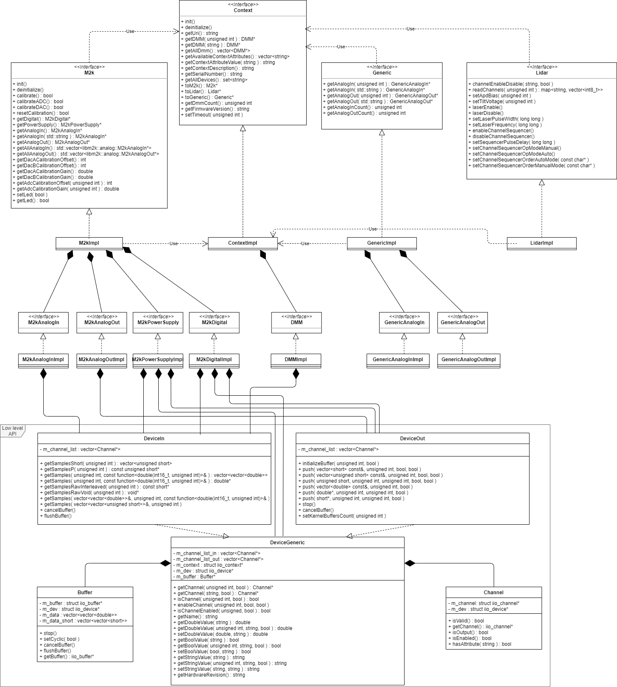
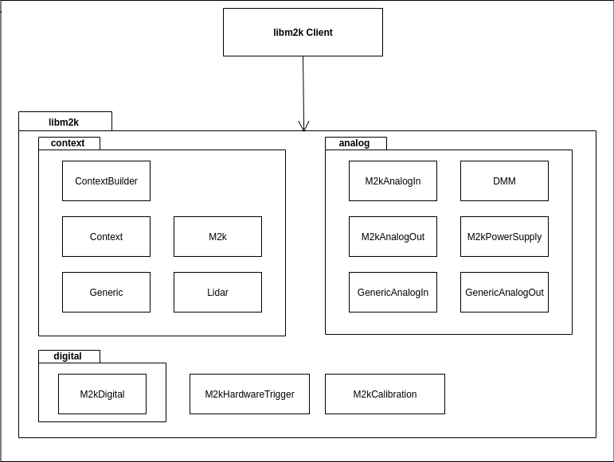
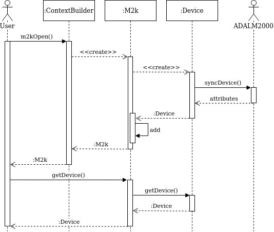
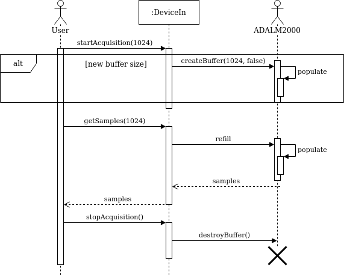
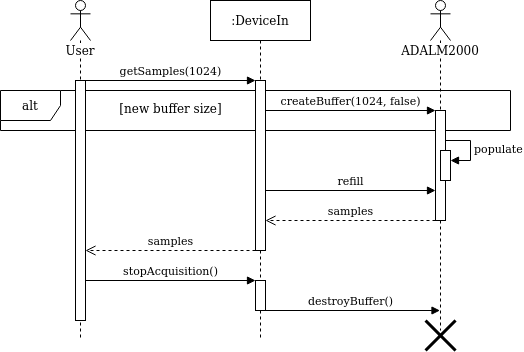

|
libm2k
|
libm2k is licensed under the GNU Lesser General Public License v2.1
libm2k is a C++ library for interfacing with the ADALM2000, splitted into more correlated components, interconnected by a context. These M2K components represent the functionalities of ADALM2000:
The class diagram containing details for all public classes of libm2k.
The top level diagram provides an overview for the library structure. The components are organized in their corresponding namespaces.
In this diagram the necessary steps to create an M2K context and get a specific device are presented. 
The sequence diagram shows an example to the asynchronous acquisition flow for Analog In or Digital In. Running "startAcquisition(number_of_samples)" will create, initialize and populate the available kernel buffers with data. Everytime we call "getSamples", we retrieve data from those kernel buffers, which will automatically be refilled. 
The sequence diagram shows an example to the synchronous acquisition flow for Analog In or Digital In. Running "getSamples(number_of_samples)" will create and initialize, but it will also populate all the available kernel buffers with data and it will return one buffer to the user. 
In order to use libm2k in Python applications please check the libm2k Python Bindings API
The following code shows a simple example on how to use libm2k together with the digital side of ADALM2000.
There are multiple examples provided for libm2k and can be found on the Github libm2k examples page. The examples are created to ease the work for a libm2k user. To get familiar with libm2k API, the examples can be modified and built out of the libm2k source code tree by keeping the CMake configuration file provided for each example.
Useful questions and answers for the libm2k API usage and ADALM2000 manipulation
The Python bindings API are not a 100% mirror of the C++ code. Therefore, some methods might have a slightly different return type for Python (it is necessary to check the Python Bindings API Documentation listed above). For example, the getSamplesRawInterleaved() method will return 4*nb_samples elements in the Python list. In order to make the acquisition faster, all the samples are returned in a bytes list. One sample for one channel (for AnalogIn) is represented using 2 bytes. The returned list of bytes will be interleaved, this meaning that it should be interpreted as one sample from CHANNEL_1, one sample from CHANNEL_2 and so on. One thing to keep in mind is that a sample corresponds to 2 elements in the list.
Let's take an example:
In order to convert all the samples you can use the following chunk of Python code:
Next thing is to convert it into Volts. In Python, for AnalogIn() you have 2 exposed methods: libm2k::analog::M2kAnalogIn::convertVoltsToRaw(unsigned int channel, double voltage) and libm2k::analog::M2kAnalogIn::convertRawToVolts(unsigned int channel, short raw). Running convertRawToVolts(0, value_list[0]) should provide the needed Volts value for CHANNEL_1.
1.8.15